こいのぼりの空
横浜
休みの初日、近所の空にはこいのぼりが群れになって泳いでいた。青い空と新緑と、色とりどりの鯉。五月が来たんだな、と思った。翌日は沼津で、息子がにこにこしながらランチのプレートを前にしていた。
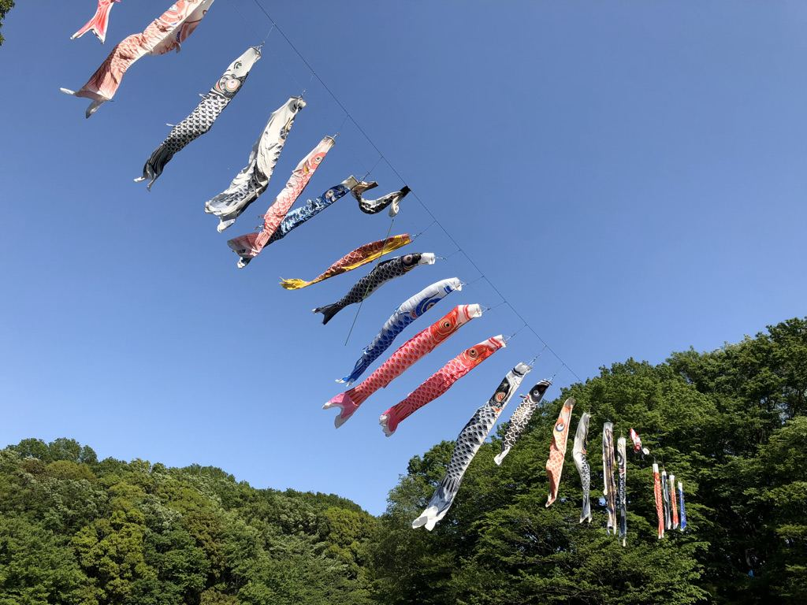
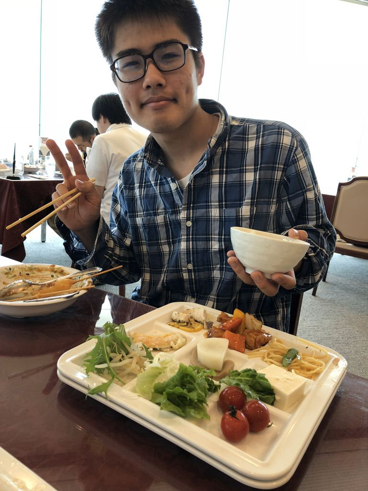

横浜・三浦・房総・金沢文庫 2018年4月29日〜5月6日
2018年のゴールデンウィーク、僕らは遠くへは行かなかった。そのかわり、家のまわりや近くの海、房総のゴルフ場、古いお寺と、毎日どこかへ少しずつ出かけた。
途中には妻の家族も遊びに来て、家の庭でバーベキューをした。旅行というより、長い休みの記録だ。
横浜
休みの初日、近所の空にはこいのぼりが群れになって泳いでいた。青い空と新緑と、色とりどりの鯉。五月が来たんだな、と思った。翌日は沼津で、息子がにこにこしながらランチのプレートを前にしていた。


三浦
三浦の岩場へ行った。海はとても澄んでいて、岩の上には小さなフグが一匹打ち上げられていた。誰かが釣って、置いていったのかもしれない。
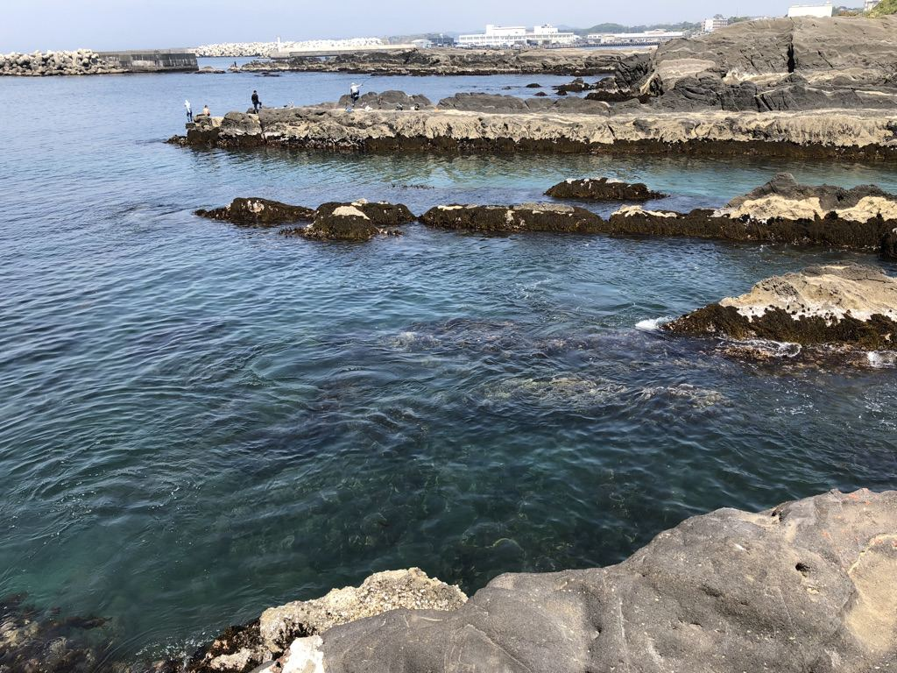
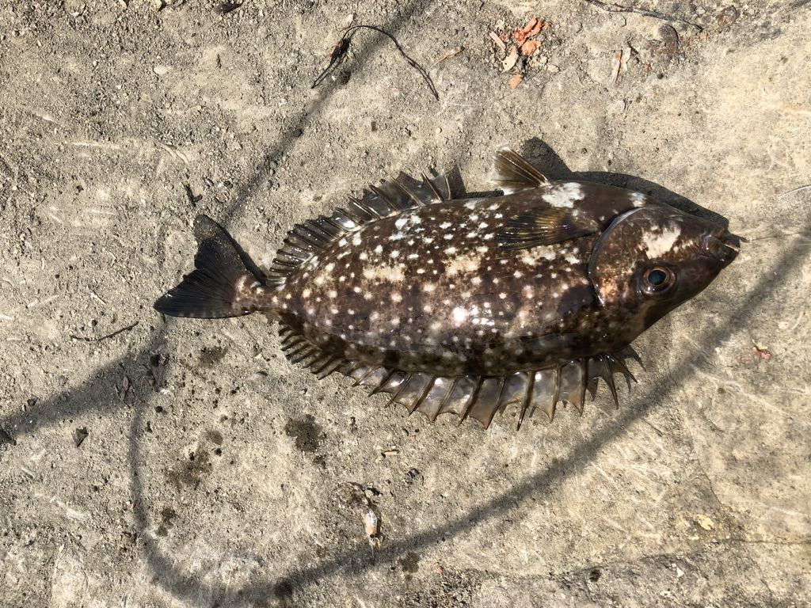
横浜の自宅
憲法記念日には、妻の家族が遊びに来た。家の縁側の前にテーブルを出し、網の上で海老や貝やソーセージを焼いた。息子はみんなの真ん中でよく食べ、よく笑っていた。夕暮れの空が、家の瓦屋根の上で少しずつ色を変えていった。
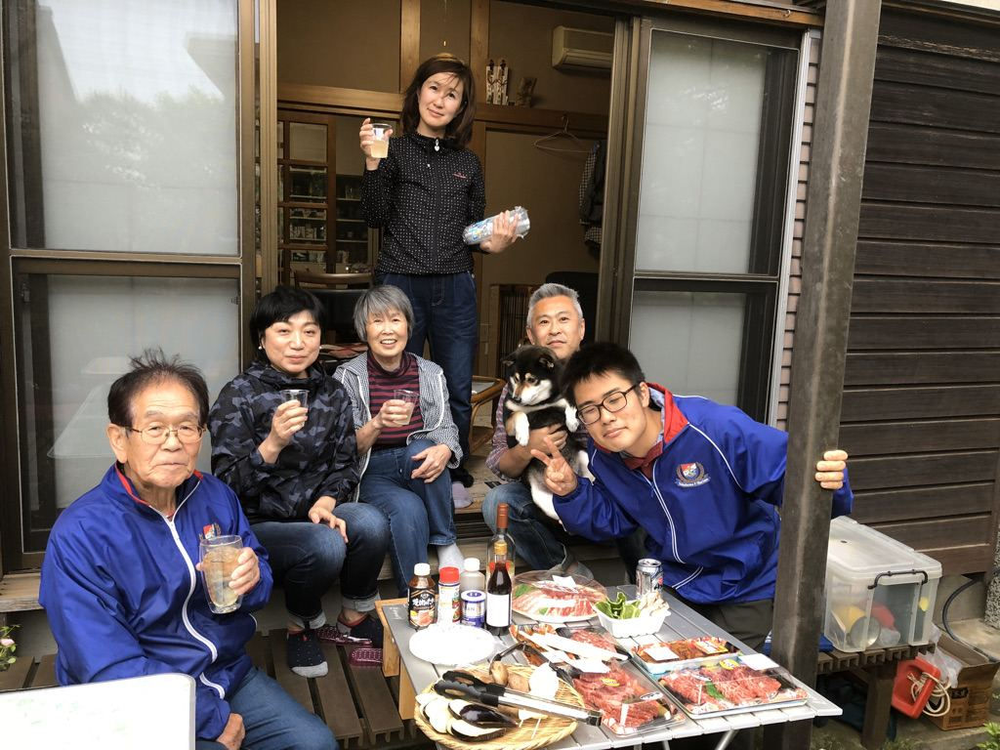
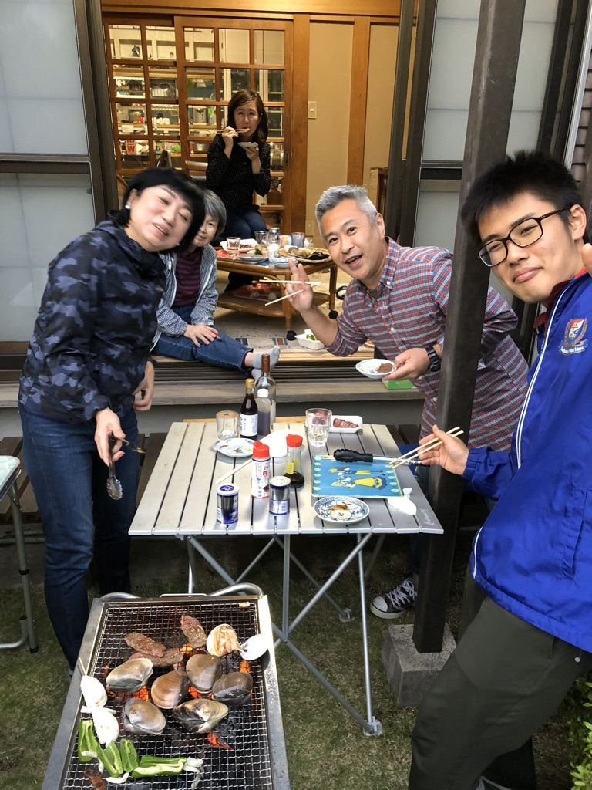
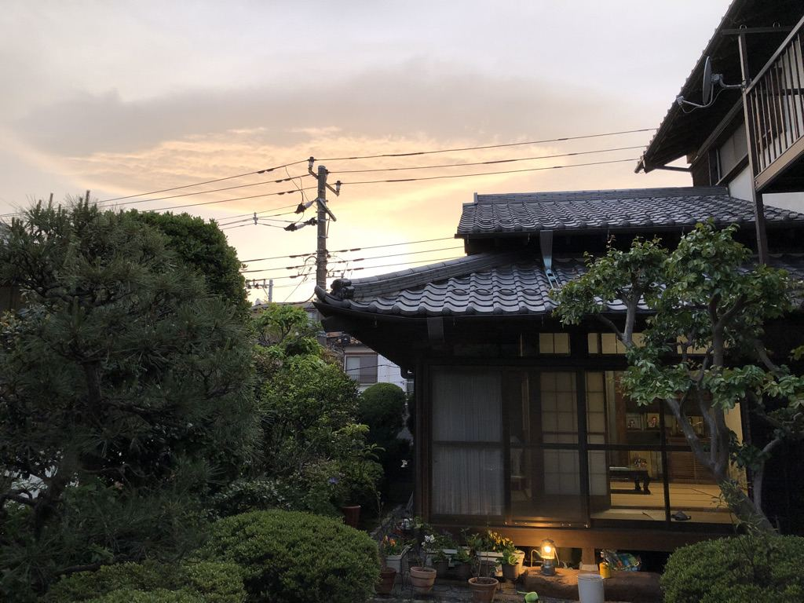
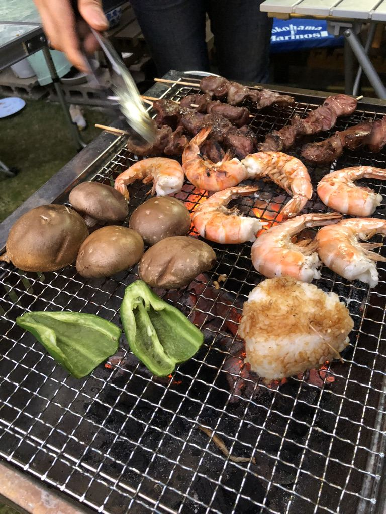
房総
みどりの日は、房総のゴルフ場へ出かけた。新緑のフェアウェイは目にまぶしいくらいだった。途中で通りかかった小さな駅のホームからは、草に囲まれた単線の線路がまっすぐ森の中へ続いていた。
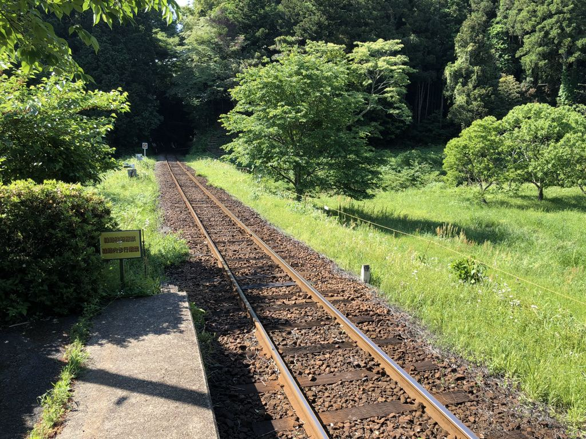
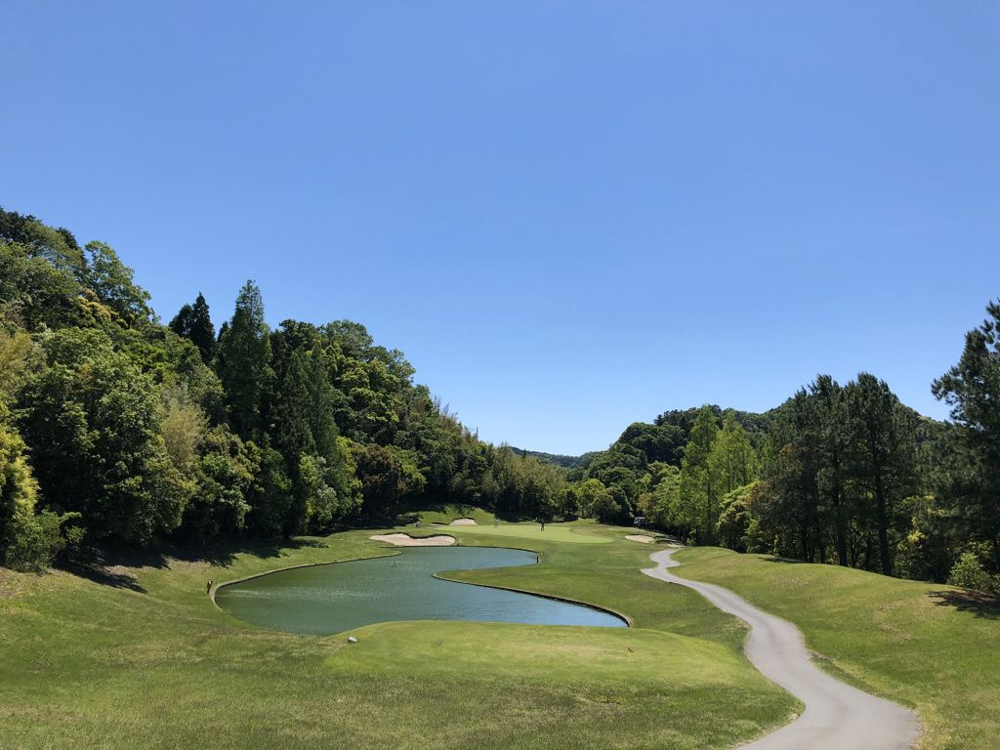
金沢文庫・称名寺
こどもの日は、金沢文庫の称名寺をたずねた。大きな仁王門をくぐると、池に朱色の反り橋がかかっていた。妻は池のほとりで、気持ちよさそうに目を細めた。裏山にのぼると、新緑の向こうに海と町が見えた。
翌日、僕らは静岡のほうまで車を走らせた。メーターの針を眺めながら、長い休みもそろそろ終わりだな、と思った。
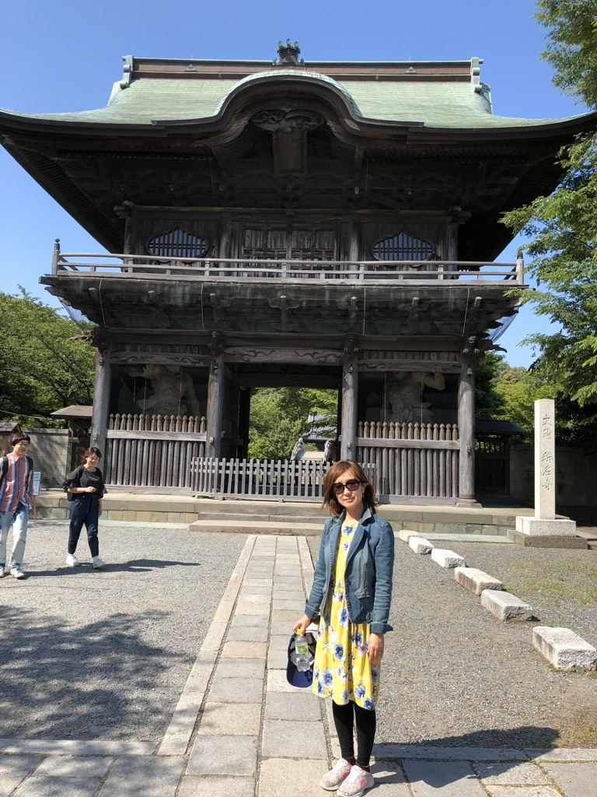
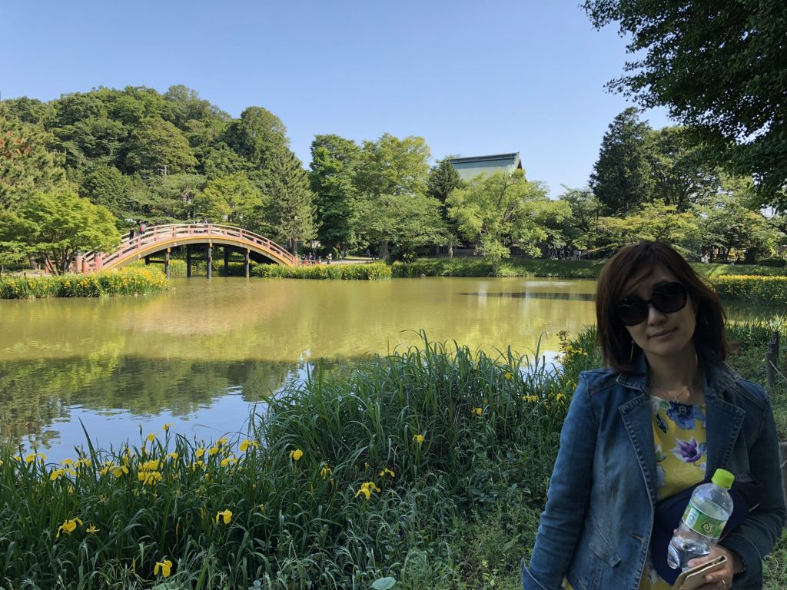
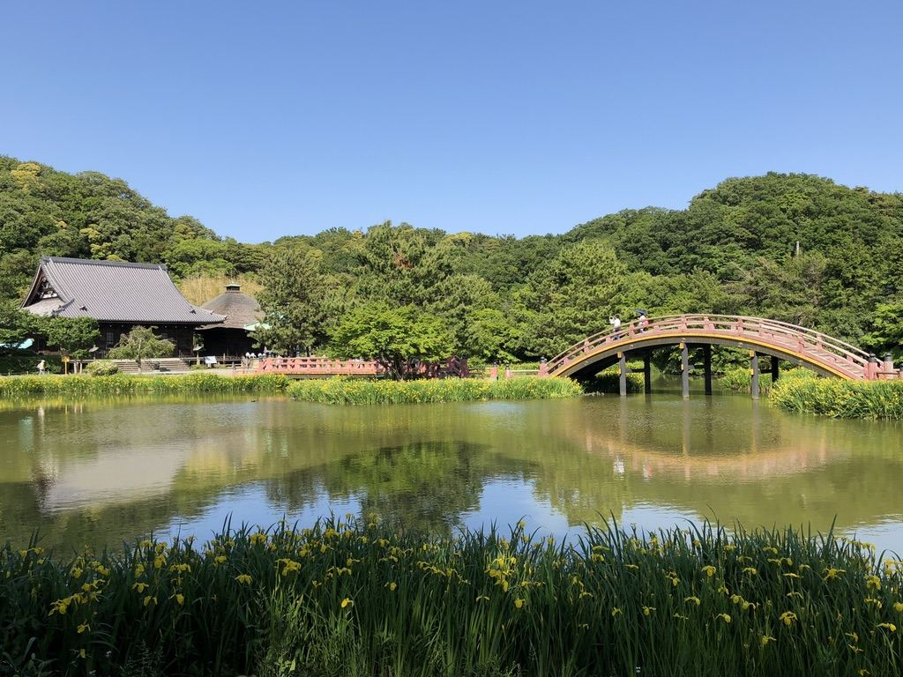
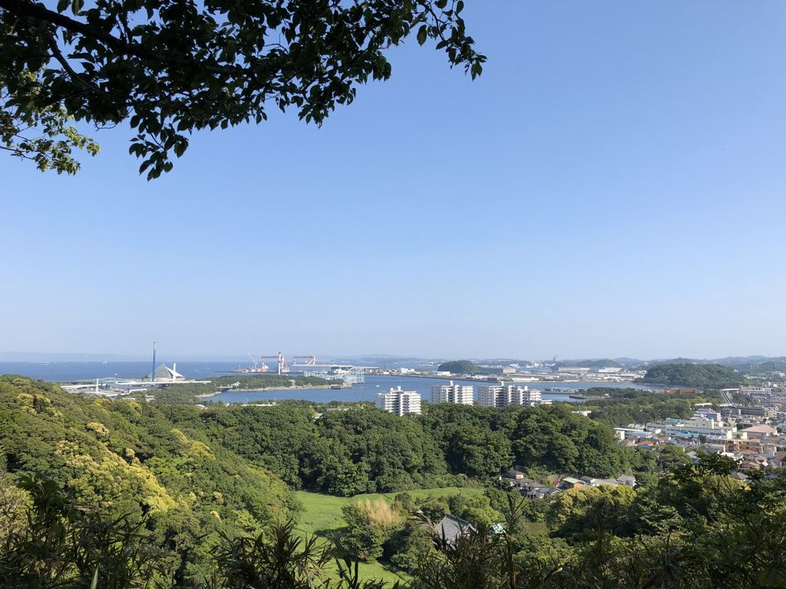